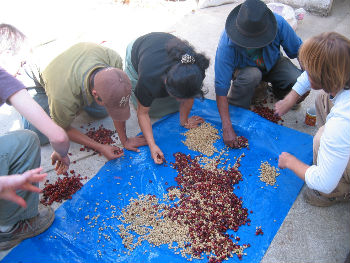

10 Steps from Seed to Cup
The coffee you enjoy each day has taken a long journey to arrive in your cup. Between the time they’re planted, picked and purchased, coffee beans go through a typical series of steps to bring out their best.
-
Planting

A coffee bean is actually a seed. When dried, roasted and ground, it’s used to brew coffee. If the seed isn’t processed, it can be planted and grow into a coffee tree. Coffee seeds are generally planted in large beds in shaded nurseries. The seedlings will be watered frequently and shaded from bright sunlight until they are hearty enough to be permanently planted. Planting often takes place during the wet season, so that the soil remains moist while the roots become firmly established.
-
Harvesting the Cherries
Depending on the variety, it will take approximately 3 to 4 years for the newly planted coffee trees to bear fruit. The fruit, called the coffee cherry, turns a bright, deep red when it is ripe and ready to be harvested.
There is typically one major harvest a year. In countries like Colombia, where there are two flowerings annually, there is a main and secondary crop.
In most countries, the crop is picked by hand in a labor-intensive and difficult process, though in places like Brazil where the landscape is relatively flat and the coffee fields immense, the process has been mechanized. Whether by hand or by machine, all coffee is harvested in one of two ways:
Strip Picked: All of the cherries are stripped off of the branch at one time, either by machine or by hand.
Selectively Picked: Only the ripe cherries are harvested, and they are picked individually by hand. Pickers rotate among the trees every eight to 10 days, choosing only the cherries which are at the peak of ripeness. Because this kind of harvest is labor intensive and more costly, it is used primarily to harvest the finer Arabica beans.
A good picker averages approximately 100 to 200 pounds of coffee cherries a day, which will produce 20 to 40 pounds of coffee beans. Each worker's daily haul is carefully weighed, and each picker is paid on the merit of his or her work. The day's harvest is then transported to the processing plant.
Processing the Cherries
Once the coffee has been picked, processing must begin as quickly as possible to prevent fruit spoilage. Depending on location and local resources, coffee is processed in one of two ways:
The Dry Method is the age-old method of processing coffee, and still used in many countries where water resources are limited. The freshly picked cherries are simply spread out on huge surfaces to dry in the sun. In order to prevent the cherries from spoiling, they are raked and turned throughout the day, then covered at night or during rain to prevent them from getting wet. Depending on the weather, this process might continue for several weeks for each batch of coffee until the moisture content of the cherries drops to 11%.
The Wet Method removes the pulp from the coffee cherry after harvesting so the bean is dried with only the parchment skin left on. First, the freshly harvested cherries are passed through a pulping machine to separate the skin and pulp from the bean.
Then the beans are separated by weight as they pass through water channels. The lighter beans float to the top, while the heavier ripe beans sink to the bottom. They are passed through a series of rotating drums which separate them by size.
After separation, the beans are transported to large, water-filled fermentation tanks. Depending on a combination of factors -- such as the condition of the beans, the climate and the altitude -- they will remain in these tanks for anywhere from 12 to 48 hours to remove the slick layer of mucilage (called the parenchyma) that is still attached to the parchment. While resting in the tanks, naturally occurring enzymes will cause this layer to dissolve.
When fermentation is complete, the beans feel rough to the touch. The beans are rinsed by going through additional water channels, and are ready for drying.
Drying the Beans
If the beans have been processed by the wet method, the pulped and fermented beans must now be dried to approximately 11% moisture to properly prepare them for storage. These beans, still inside the parchment envelope (the endocarp), can be sun-dried by spreading them on drying tables or floors, where they are turned regularly, or they can be machine-dried in large tumblers. The dried beans are known as parchment coffee, and are warehoused in jute or sisal bags until they are readied for export.
Milling the Beans
Before being exported, parchment coffee is processed in the following manner:
Hulling machinery removes the parchment layer (endocarp) from wet processed coffee. Hulling dry processed coffee refers to removing the entire dried husk — the exocarp, mesocarp and endocarp — of the dried cherries.
Polishing is an optional process where any silver skin that remains on the beans after hulling is removed by machine. While polished beans are considered superior to unpolished ones, in reality, there is little difference between the two.
Grading and Sorting is done by size and weight, and beans are also reviewed for color flaws or other imperfections.
Beans are sized by being passed through a series of screens. They are also sorted pneumatically by using an air jet to separate heavy from light beans.
Typically, the bean size is represented on a scale of 10 to 20. The number represents the size of a round hole's diameter in terms of 1/64's of an inch. A number 10 bean would be the approximate size of a hole in a diameter of 10/64 of an inch, and a number 15 bean, 15/64 of an inch.
Finally, defective beans are removed either by hand or by machinery. Beans that are unsatisfactory due to deficiencies (unacceptable size or color, over-fermented beans, insect-damaged, unhulled) are removed. In many countries, this process is done both by machine and by hand, ensuring that only the finest quality coffee beans are exported.
Exporting the Beans

The milled beans, now referred to as green coffee, are loaded onto ships in either jute or sisal bags loaded in shipping containers, or bulk-shipped inside plastic-lined containers.
World coffee production for 2015/16 is forecast to be 152.7 million 60-kg bags, per data from the USDA Foreign Agriculture Service.
Tasting the Coffee

Coffee is repeatedly tested for quality and taste. This process is referred to as cupping and usually takes place in a room specifically designed to facilitate the process.
- First, the taster — usually called the cupper — evaluates the beans for their overall visual quality. The beans are then roasted in a small laboratory roaster, immediately ground and infused in boiling water with carefully-controlled temperature. The cupper noses the brew to experience its aroma, an essential step in judging the coffee's quality.
- After letting the coffee rest for several minutes, the cupper breaks the crust by pushing aside the grounds at the top of the cup. Again, the coffee is nosed before the tasting begins.
- To taste the coffee, the cupper slurps a spoonful with a quick inhalation. The objective is to spray the coffee evenly over the cupper's taste buds, and then weigh it on the tongue before spitting it out.
Roasting the Coffee

Roasting transforms green coffee into the aromatic brown beans that we purchase in our favorite stores or cafés. Most roasting machines maintain a temperature of about 550 degrees Fahrenheit. The beans are kept moving throughout the entire process to keep them from burning.
When they reach an internal temperature of about 400 degrees Fahrenheit, they begin to turn brown and the caffeol, a fragrant oil locked inside the beans, begins to emerge. This process called pyrolysis is at the heart of roasting — it produces the flavor and aroma of the coffee we drink.
After roasting, the beans are immediately cooled either by air or water. Roasting is generally performed in the importing countries because freshly roasted beans must reach the consumer as quickly as possible.
Grinding Coffee

The objective of a proper grind is to get the most flavor in a cup of coffee. How coarse or fine the coffee is ground depends on the brewing method. The length of time the grounds will be in contact with water determines the ideal grade of grind Generally, the finer the grind, the more quickly the coffee should be prepared. That’s why coffee ground for an espresso machine is much finer than coffee brewed in a drip system.
Brewing Coffee
To master how to brew coffee, use our guide for tips and methods on how to make the perfect cup for any preference. Enjoy!